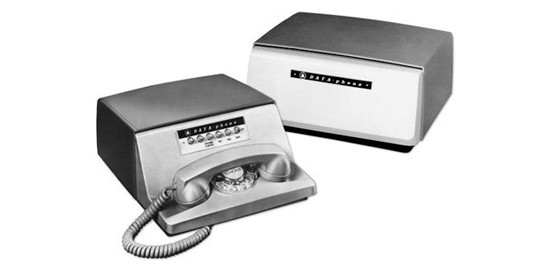
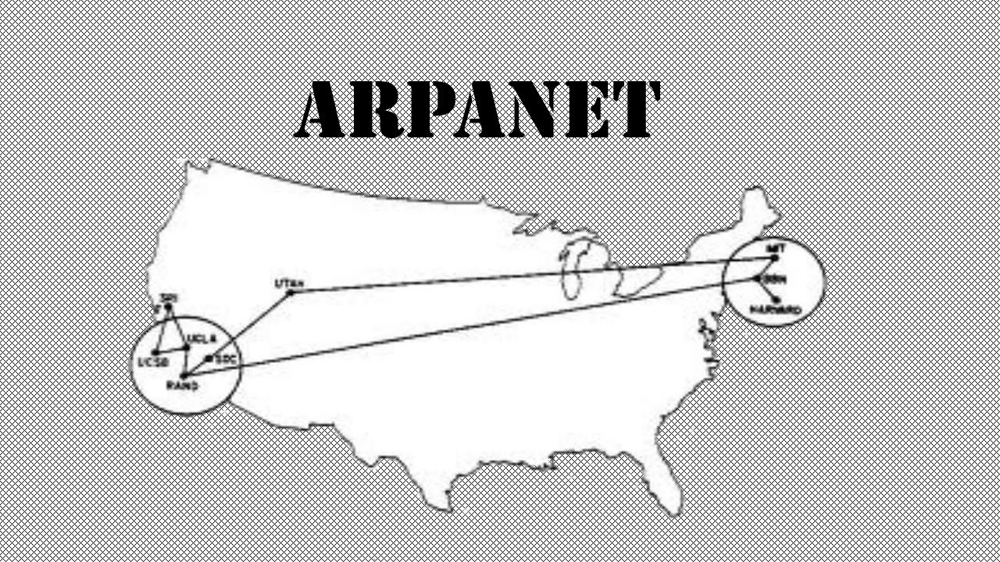
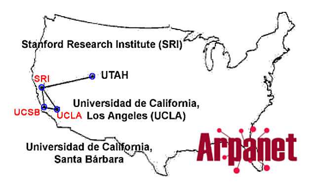
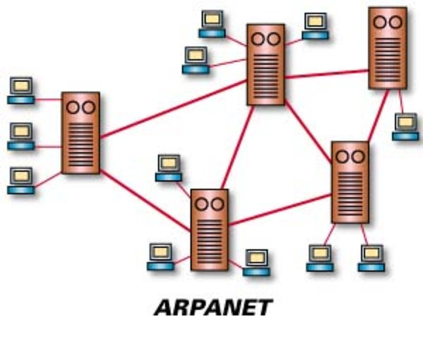
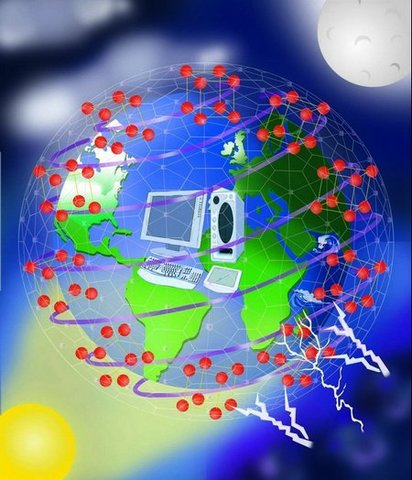
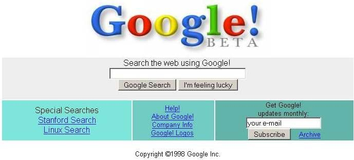
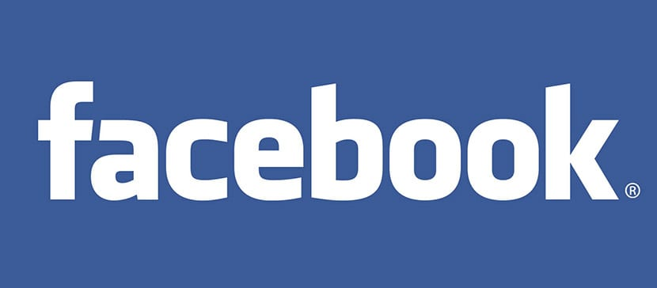
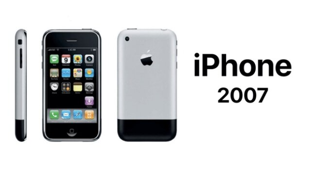

Historia del internet
Se remonta al desarrollo de las redes de comunicación. La idea de una red
de ordenadores creada para permitir la comunicación general entre usuarios
de varias computadoras sea tanto desarrollos tecnológicos como la fusión
de la infraestructura de la red ya existente y los sistemas de
telecomunicaciones.
Historia de la web
Al principio la comunicación entre ordenadores era muy básica, sólo se
intercambiaban mensajes o se ofrecía un acceso directo a los ficheros
similar a cómo hoy accedemos a otro equipo a través de FTP. Los
informáticos se dieron cuenta de que era necesario un nuevo sistema de
comunicación que permitiese mostrar información de forma intuitiva, para
que todo el mundo pudiese acceder a ella. Tim Berners-Lee, un científico
inglés que trabajaba en el CERN, la Organización Europea para la
Investigación Nuclear, con sede en Suiza, inventó un protocolo de
comunicación basado en hipertexto (enlaces dentro de palabras), que
permitía crear páginas con texto e imágenes que se enlazaban entre sí. Lo
llamó World Wide Web (WWW).

Cronologia
-
1958-La compañía BELL crea el primer módem que permitía transmitir datos
binarios sobre una línea telefónica simple.

-
1962-Inicio de investigaciones por parte de ARPA, una agencia del
ministerio estadounidense de defensa, donde J. C. R. Licklider defiende
exitosamente sus ideas relativas a una red global de computadoras.
- 1967-Primera conferencia sobre ARPANET

-
1969-Conexión de las primeras computadoras entre 4 universidades
estadounidenses a través de la Interface Message Processor de Leonard
Kleinrock

-
1971-23 computadoras son conectadas a ARPANET. Envío del primer correo
electrónico por Ray Tomlinson.

-
1972-Nacimiento del InterNetworking Working Group, organización
encargada de administrar Internet.
-
1973-Reino Unido y Noruega se adhieren a Internet, cada una con una
computadora.

-
1979-Creación de los NewsGroups (foros de discusión) por estudiantes
estadounidenses.

- 1981-Definición del protocolo TCP/IP y de la palabra «Internet»
- 1983-Primer servidor de nombres de sitios.
- 1984-1000 computadoras conectadas.
- 1987-10000 computadoras conectadas.
- 1989-100000 computadoras conectadas.

- 1990-Desaparición de ARPANET. Se crea el primer navegador web.
- 1991-Se anuncia públicamente la World Wide Web
- 1992-1 millón de computadoras conectadas.
-
1993-Aparición del navegador web NCSA Mosaic Primer buscador de la
historia, Wandex servía como un índice de páginas web.
- 1996-10 millones de computadoras conectadas
- 1998-Nace Google.

- 2001-Explosión de la Burbuja.com. Nace la Wikipedia.
- 2004-Nace Facebook.

- 2005-Internet alcanza 1000 millones de usuarios.
- 2007-La aparición del iPhone populariza la web móvil.

-
2009-Comienzos de la mensajería instantánea en teléfonos móviles. Nace
Whatsapp.

Información tomada de:
Más información: